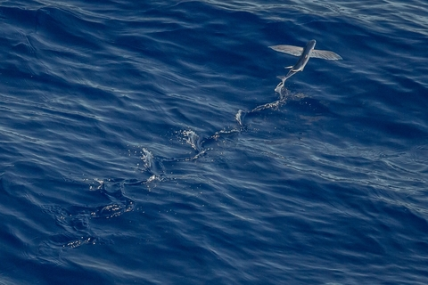
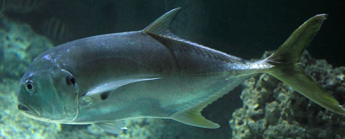

Profil
Indonesia merupakan negara kepulauan terbesar di dunia dengan jumlah pulau kurang lebih 17.400 pulau dan total luas wilayah sekitar 7,81 juta km2. Luas wilayah lautan Indonesia mencapai 3,25 juta km2 yang berarti lebih luas dari daratannya.
Letak wilayah Indonesia yang strategis berada pada cakupan iklim tropis. Dengan alasan tersebut Indonesia menjadi rumah bagi beragam spesies ikan baik air tawar dan air laut.
Berikut beberapa spesies ikan yang hidup di Indonesia.
Ikan Air Tawar
Ikan Mas
Klasifikasi
Filum: Chordata
Kelas: Actinopterygii
Ordo: Cypriniformes
Famili: Cyprinidae
Genus: Cyprinus
Spesies: Cyprinus carpio
Morfologi
Bentuk tubuh fusiform dengan berat mencapai 30-60 cm dengan berat antara 0,5-4 kg. Tubuhnya memiliki tulang punggung yang bergerigi. Struktur mulut terminal yang dapat disembulkan. Proporsi warna yang bervariasi dengan sisik yang besar dan tebal.
Habitat
Ikan Mas hidup pada berbagai habitat air tawar dengan pergerakan air yang tenang. Ian ini suka dengan badan air yang luas dengan sedimen yang lunak.
Ikan Lele

Klasifikasi
Filum: Chordata
Kelas: Actinopterygii
Ordo: Siluriformes
Famili: Clariidae
Genus: Clarias
Spesies: Clarias batrachus
Morfologi
Struktur tubuh memanjang dengan kepala menyempit (tak beraturan). Memiliki 54-60 tulang belakang, 63-74 sirip punggung, dan 47-58 sirip dubur. Umumnya berwarna coklat pada bagian dorsal dan berbintik pada samping mendekati ventral. Pada betina perut lebih lebar. jantan memiliki sirip punggung yang berbintik.
Habitat
Umumnya Ikan Lele ditemukan pada substrat berlumpur pada perairan tawar, payau, dan daratan yang tergenang air. hidup mendominasi di wilayah tropis dengan suhu perairan antara 0-18 derajat celcius.
Ikan Arapaima
Klasifikasi
Filum: Chordata
Kelas: Actinopterygii
Ordo: Osteoglossiformes
Famili: Arapaimaidae
Genus: Arapaima
Spesies: Arapaima gigas
Morfologi
Salah satu ikan air tawar terbesar di dunia dengan panjang lebih dari 3 m dan berat lebih dari 150 kg. Sisik pada pirarucu mencapai ukuran 6 cm. Berwana abu-abu dengan bintik orange di dekat ujung posteriornya. Ikan ini memiliki lidah bertulang atau bergigi dan menjadi pembeda dari anggota ordo lainnya.
Habitat
Ikan Arapaima hidup di lembah Amazon, khususnya di anak sungai besar. Menempati air yang jernih dengan oksigen yang sedikit.
Ikan Air Laut
Ikan Cakalang
Klasifikasi
Filum: Chordata
Kelas: Actinopterygii
Ordo: Perciformes
Famili: Scombridae
Genus: Katsuwonus
Spesies: Katsuwonus pelamis
Morfologi
Bentuk tubuh fusiform (panjang dan agak membulat). Sirip punggung yang terpisah, sirip dada pendek, dan terdapat 2 flopis diantara sirip perut. Tubuh tidak bersisik, bagian dorsal tubuh berwarna lebih gelap dengan 4-6 garis hitam disamping tubuh.
Habitat
Ikan Cakalang hidup bergerombol dengan wilayah migrasi yang meliputi seluruh lautan. Persebaran vertikal dari permukaan hingga kedalaman 260 m.
Ikan Terbang

Klasifikasi
Filum: Chordata
Kelas: Oshteichtyes
Ordo: Belonifromes
Famili: Exocoetidae
Genus: Hirundichthys
Spesies: Hirundichthys oxycephalus
Morfologi
Panjang tubuh ikan terbang rata-rata berkisar 18 cm. Tubuhnya bulat memanjang seperti cerutu, agak termampat pada bagian samping. Bagian atas tubuh berwarna gelap dan mengkilap. Sirip dorsal dan anal transparan, sirip ekor dan ventra keabu-abuan, sirip pectoral panjang dan dapat diadaptasikan utuk melayang dan mengandung banyak duri lemah.
Habitat
Ikan Terbang merupakan salah satu ikan pelagis kecil yang banyak ditemukan di perairan tropis maupun subtropis dengan kondisi air tidak keruh dan berlumpur.
Ikan Kuwe

Klasifikasi
Filum:
Kelas: Actinopterygii
Ordo: Perciformes
Famili: Carangidae
Genus: Caranx
Spesies: Caranx ignobilis
Morfologi
Bentuk tubuh fusiform dengan kepala yang curam, sisik tebal pada pangkal ekor. daerah tidak bersisik pada dada dipisahkan dari dasar dada yang polos oleh area sisik yang luas. memiliki 20-24 tapis insang pada lengkung insang ke-1, dan 19-21 jari lunak sirip punggung.
Habitat
Ikan Kuwe hidup pada perairan laut, daerah payau, dan berasosiasi dengan terumbu karang. Dengan suhu perairan 26-29 derajat celcius pada kedalaman 10-188 m.
Referensi
Chumchal, M. 2002. "Cyprinus carpio" (On-line), Animal Diversity Web. Accessed June 03, 2021 at https://animaldiversity.org/accounts/Cyprinus_carpio/
Melfi, L. 2003. "Arapaima gigas" (On-line), Animal Diversity Web. Accessed June 03, 2021 at https://animaldiversity.org/accounts/Arapaima_gigas/
Rainey, S. 2018. "Clarias batrachus" (On-line), Animal Diversity Web. Accessed June 03, 2021 at https://animaldiversity.org/accounts/Clarias_batrachus/